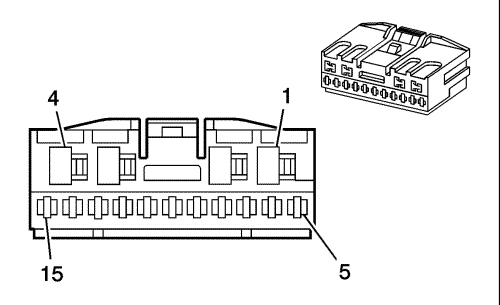
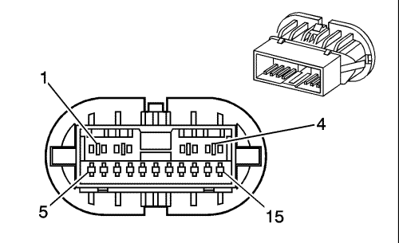

Captiva |
||||||||
|
|
|
|||||||
|
 |
 |
Información de parte de conector
| Información de parte de conector
|
Información de parte de terminal
| Información de parte de terminal
|
Bulón | Tamaño | Color | Circuito | Función | Opción | Bulón | Tamaño | Color | Circuito | Opción |
|---|---|---|---|---|---|---|---|---|---|---|
1 | .75 | D-GN | 168 | Señal de subida trasera izquierda del interruptor maestro del elevalunas eléctrico | Base de rueda larga | 1 | 1.25 | D-GN | 168 | Base de rueda larga |
.75 | L-BU/WH | 280 | Señal de bloqueo del interruptor maestro del elevalunas eléctrico | Base de rueda corta con A31 | 1.25 | L-BU/WH | 280 | Base de rueda corta con A31 | ||
2 | .75 | PU | 169 | Señal de bajada trasera izquierda del interruptor maestro del elevalunas eléctrico | Base de rueda larga | 2 | 1.25 | PU | 169 | Base de rueda larga |
.75 | BK | 450 | Toma de tierra | Base de rueda corta con A31 | 1.25 | BK | 450 | Base de rueda corta con A31 | ||
3 | 0,75 | YE | 743 | Tensión accesoria | Base de rueda corta con A31 | 3 | 1.25 | YE | 743 | Base de rueda corta con A31 |
-- | -- | -- | No se utiliza | -- | -- | -- | -- | -- | ||
4 | 0,75 | D-BU | 1307 | Señal de bloqueo del interruptor maestro del elevalunas eléctrico | -- | 4 | 1.25 | D-BU | 1307 | -- |
5 | 0,75 | D-GN | 168 | Señal de subida trasera izquierda del interruptor maestro del elevalunas eléctrico | Base de rueda larga | 5 | 1.25 | D-GN | 168 | Base de rueda larga |
-- | -- | -- | No se utiliza | Base de rueda corta con A31 | -- | -- | -- | Base de rueda corta con A31 | ||
6 | 0.85 | TN | 294 | Control de desbloqueo del actuador de cierre de la puerta | -- | 6 | 0.85 | TN | 294 | -- |
7 | 0,5 | BN | 199 | Altavoz trasero izquierdo (+) | -- | 7 | 0,5 | BN | 199 | -- |
0,5 | OG | 1858 | UX8 | |||||||
8 | 0,5 | YE | 116 | Señal de altavoz trasero izquierdo (-) | -- | 8 | 0,5 | YE | 116 | UX8 |
0,5 | PU | 1958 | UX8 | |||||||
9 | 0,5 | 9 | 169 | Señal de bajada trasera izquierda del interruptor maestro del elevalunas eléctrico | Base de rueda corta con A31 | 9 | 0,5 | PU | 169 | Base de rueda corta con A31 |
-- | -- | -- | No se utiliza | Base de rueda larga | -- | -- | -- | -- | ||
10 | 0.85 | GY | 295 | Control de bloqueo del actuador de cierre de la puerta | -- | 10 | 0.85 | GY | 295 | -- |
11 | 1.25 | D-GN | 5048 | Señal de movimiento rápido de la ventanilla eléctrica trasera izquierda desde el interruptor | Base de rueda corta con A31 | 11 | 1.25 | D-GN | 5048 | Base de rueda corta con A31 |
-- | -- | -- | No se utiliza | Base de rueda larga | -- | -- | -- | Base de rueda larga | ||
12 | 0.85 | BN | 5910 | Control de bloqueo del actuador de cierre doble de la puerta | -- | 12 | 0.85 | BN | 5910 | -- |
13 | -- | -- | -- | No se utiliza | -- | 13 | -- | -- | -- | -- |
14 | 0.3 | GY/BK | 745 | Señal del interruptor de la puerta delantera izquierda entreabierta | -- | 14 | 0,5 | GY/BK | 746 | -- |
15 | 0.3 | BK | 450 | Toma de tierra | -- | 15 | 0,5 | BK | 450 | -- |
| © Copyright Chevrolet Europe. All rights reserved |